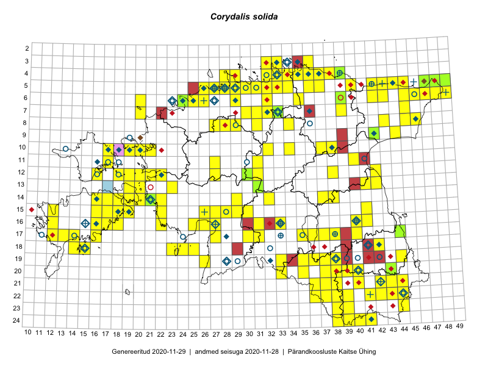

Corydalis solida
Uuendatud: 2016-12-08
Kaardile koondatud taksonid: Corydalis solida (L.) Clairv.

Kaart põhineb 234 kirjel, neist vaatlusi 231 ja eksemplare 3. Taksonit on leitud 134 ruudust.
| Ruut | Vaatleja(d) | Vaatlusaeg | Kirje tüüp | Viide andmebaasikirjele |
|---|---|---|---|---|
| 07-45 | Thea Kull | 2015-04-27 | ruut/ala | vaata PlutoFis |
| 17-40 | Meeli Mesipuu, Kadri Tali | 2015-04-30 | ruut/ala | vaata PlutoFis |
| 08-43 | Meeli Mesipuu, Liina Oja | 2015-04-27 | ruut/ala | vaata PlutoFis |
| 12-30 | Peedu Saar, Timo Luhamäe | 2015-05-10 | ruut/ala | vaata PlutoFis |
| 12-30 | Peedu Saar, Timo Luhamäe | 2015-05-10 | punkt | vaata PlutoFis |
| 12-31 | Peedu Saar, Timo Luhamäe | 2015-05-10 | ruut/ala | vaata PlutoFis |
| 12-31 | Peedu Saar, Timo Luhamäe | 2015-05-10 | punkt | vaata PlutoFis |
| 07-39 | Peedu Saar, Timo Luhamäe | 2015-05-13 | ruut/ala | vaata PlutoFis |
| 05-32 | Rein Kalamees | 2015-06-08 | ruut/ala | vaata PlutoFis |
| 11-40 | Toomas Kukk, Raivo Kalle | 2015-05-12 | ruut/ala | vaata PlutoFis |
| 11-40 | Toomas Kukk, Raivo Kalle | 2015-05-12 | punkt | vaata PlutoFis |
| 17-44 | Eerik Leibak, Toomas Kukk | 2015-05-03 | ruut/ala | vaata PlutoFis |
| 17-44 | Toomas Kukk, Eerik Leibak | 2015-05-03 | punkt | vaata PlutoFis |
| 17-44 | Toomas Kukk, Eerik Leibak | 2015-05-03 | punkt | vaata PlutoFis |
| 05-45 | Toomas Kukk, Eerik Leibak | 2015-04-25 | ruut/ala | vaata PlutoFis |
| 05-47 | Toomas Kukk, Eerik Leibak | 2015-04-26 | ruut/ala | vaata PlutoFis |
| 05-48 | Toomas Kukk, Eerik Leibak | 2015-04-26 | ruut/ala | vaata PlutoFis |
| 05-49 | Toomas Kukk, Eerik Leibak | 2015-04-26 | ruut/ala | vaata PlutoFis |
| 06-42 | Toomas Kukk, Eerik Leibak | 2015-04-27 | ruut/ala | vaata PlutoFis |
| 06-46 | Toomas Kukk, Eerik Leibak | 2015-04-25 | ruut/ala | vaata PlutoFis |
| 05-45 | Toomas Kukk, Eerik Leibak | 2015-04-25 | punkt | vaata PlutoFis |
| 05-45 | Toomas Kukk, Eerik Leibak | 2015-04-25 | punkt | vaata PlutoFis |
| 06-46 | Toomas Kukk, Eerik Leibak | 2015-04-25 | punkt | vaata PlutoFis |
| 05-48 | Toomas Kukk, Eerik Leibak | 2015-04-26 | punkt | vaata PlutoFis |
| 05-49 | Toomas Kukk, Eerik Leibak | 2015-04-26 | punkt | vaata PlutoFis |
| 05-49 | Toomas Kukk, Eerik Leibak | 2015-04-26 | punkt | vaata PlutoFis |
| 06-42 | Toomas Kukk, Eerik Leibak | 2015-04-27 | punkt | vaata PlutoFis |
| 05-36 | Toomas Kukk, Eerik Leibak | 2015-04-27 | punkt | vaata PlutoFis |
| 04-38 | Rein Kalamees, Kersti Püssa | 2015-05-29 | ruut/ala | vaata PlutoFis |
| 09-42 | Thea Kull, Peedu Saar | 2015-04-25 | punkt | vaata PlutoFis |
| 05-42 | Thea Kull, Peedu Saar | 2015-04-25 | punkt | vaata PlutoFis |
| 05-42 | Thea Kull, Peedu Saar | 2015-04-25 | punkt | vaata PlutoFis |
| 06-45 | Thea Kull, Peedu Saar | 2015-04-26 | punkt | vaata PlutoFis |
| 06-47 | Thea Kull, Peedu Saar | 2015-04-26 | punkt | vaata PlutoFis |
| 04-36 | Rein Kalamees, Kersti Püssa | 2015-05-31 | ruut/ala | vaata PlutoFis |
| 05-42 | Peedu Saar, Thea Kull | 2015-04-25 | ruut/ala | vaata PlutoFis |
| 06-48 | Thea Kull, Peedu Saar | 2015-04-26 | ruut/ala | vaata PlutoFis |
| 05-32 | Rein Kalamees | 2015-04-25 | punkt | vaata PlutoFis |
| 06-45 | Thea Kull, Peedu Saar | 2015-04-26 | ruut/ala | vaata PlutoFis |
| 08-45 | Thea Kull, Peedu Saar | 2015-04-27 | ruut/ala | vaata PlutoFis |
| 06-47 | Thea Kull, Peedu Saar | 2015-04-26 | ruut/ala | vaata PlutoFis |
| 07-33 | Jana-Maria Habicht, Ester Valdvee | 2015-05-01 | ruut/ala | vaata PlutoFis |
| 12-38 | Thea Kull, Meeli Mesipuu | 2015-04-16 | ruut/ala | vaata PlutoFis |
| 08-34 | Jana-Maria Habicht, Ester Valdvee | 2015-05-10 | ruut/ala | vaata PlutoFis |
| 11-31 | Ott Luuk, Toivo Sepp | 2015-05-18 | ruut/ala | vaata PlutoFis |
| 13-41 | Eeva-Maria Jeletsky, Tarmo Niitla | 2015-04-26 | ruut/ala | vaata PlutoFis |
| 14-37 | Eeva-Maria Jeletsky, Tarmo Niitla | 2015-05-17 | ruut/ala | vaata PlutoFis |
| 11-31 | Ott Luuk, Toivo Sepp | 2015-05-18 | punkt | vaata PlutoFis |
| 13-19 | Meeli Mesipuu | 2015-05-08 | ruut/ala | vaata PlutoFis |
| 14-18 | Meeli Mesipuu, Kadri Tali | 2015-05-10 | ruut/ala | vaata PlutoFis |
| 14-19 | Meeli Mesipuu | 2015-05-09 | ruut/ala | vaata PlutoFis |
| 19-33 | Meeli Mesipuu | 2015-05-08 | ruut/ala | vaata PlutoFis |
| 19-33 | Meeli Mesipuu | 2015-05-08 | punkt | vaata PlutoFis |
| 20-33 | Meeli Mesipuu | 2015-05-08 | punkt | vaata PlutoFis |
| 14-38 | Ulvi Selgis | 2015-04-11 | punkt | vaata PlutoFis |
| 13-23 | Kirsi Loide, Marje Loide | 2015-04-20T07:00Z | ruut/ala | vaata PlutoFis |
| 15-12 | Mari Reitalu, Triin Reitalu | 2015-05-24 | ruut/ala | vaata PlutoFis |
| 05-29 | Erkki Otsman, Sergei Smirnov | 2015-07-12 | ruut/ala | vaata PlutoFis |
| 17-14 | Mari Reitalu, Sirje Azarov | 2015-05-09 | ruut/ala | vaata PlutoFis |
| 16-12 | Mari Reitalu, Triin Reitalu | 2015-04-15 | ruut/ala | vaata PlutoFis |
| 14-32 | Maria Abakumova | 2015-05-06 | ruut/ala | vaata PlutoFis |
| 16-33 | Maria Abakumova | 2015-05-05 | ruut/ala | vaata PlutoFis |
| 19-35 | Kai Rünk, Ülle Jõgar, Illi Tarmu | 2015-05-16T07:00Z | ruut/ala | vaata PlutoFis |
| 20-35 | Kai Rünk, Ülle Jõgar, Illi Tarmu | 2015-05-16T10:00Z | ruut/ala | vaata PlutoFis |
| 16-41 | Karin Kikas, Elle Rajandu | 2015-04-23 | ruut/ala | vaata PlutoFis |
| 10-37 | Toivo Sepp, Eerik Leibak | 2015-05-11 | ruut/ala | vaata PlutoFis |
| 10-38 | Toivo Sepp, Eerik Leibak | 2015-05-11 | ruut/ala | vaata PlutoFis |
| 10-37 | Toivo Sepp, Eerik Leibak | 2015-05-11 | punkt | vaata PlutoFis |
| 10-38 | Toivo Sepp, Eerik Leibak | 2015-05-11 | punkt | vaata PlutoFis |
| 06-43 | Meeli Mesipuu, Liina Oja | 2015-04-26 | ruut/ala | vaata PlutoFis |
| 06-43 | Meeli Mesipuu, Liina Oja | 2015-04-26 | punkt | vaata PlutoFis |
| 16-26 | Indrek Tammekänd | 2015-05-11 | ruut/ala | vaata PlutoFis |
| 09-42 | Timo Luhamäe, Liina Oja | 2015-05-14 | ruut/ala | vaata PlutoFis |
| 09-42 | Timo Luhamäe, Liina Oja | 2015-05-14 | punkt | vaata PlutoFis |
| 14-16 | Mari Reitalu, Sirje Azarov | 2015-05-09 | ruut/ala | vaata PlutoFis |
| 18-14 | Oliver Parrest | 2015-05-23 | ruut/ala | vaata PlutoFis |
| 18-15 | Oliver Parrest | 2015-05-23 | ruut/ala | vaata PlutoFis |
| 14-29 | Liina Oja, Ott Luuk | 2015-05-10 | ruut/ala | vaata PlutoFis |
| 15-19 | Sirje Azarov, Mari Reitalu | 2015-05-08 | ruut/ala | vaata PlutoFis |
| 15-19 | Mari Reitalu, Sirje Azarov | 2015-05-16 | ruut/ala | vaata PlutoFis |
| 05-44 | Liina Oja, Meeli Mesipuu | 2015-04-25 | ruut/ala | vaata PlutoFis |
| 05-43 | Liina Oja, Meeli Mesipuu | 2015-04-26 | ruut/ala | vaata PlutoFis |
| 17-14 | Sirje Azarov, Mari Reitalu | 2015-04-27 | ruut/ala | vaata PlutoFis |
| 12-42 | Karin Kikas, Elle Rajandu | 2015-05-19 | ruut/ala | vaata PlutoFis |
| 15-41 | Karin Kikas, Elle Rajandu | 2015-04-24 | ruut/ala | vaata PlutoFis |
| 16-40 | Karin Kikas, Elle Rajandu | 2015-04-16 | ruut/ala | vaata PlutoFis |
| 16-40 | Karin Kikas, Elle Rajandu | 2015-04-21 | ruut/ala | vaata PlutoFis |
| 22-41 | Karin Kikas, Elle Rajandu | 2015-05-25 | ruut/ala | vaata PlutoFis |
| 10-34 | Maret Gerz, Meeli Mesipuu | 2015-05-11 | ruut/ala | vaata PlutoFis |
| 13-31 | Meeli Mesipuu, Timo Luhamäe | 2015-06-08 | ruut/ala | vaata PlutoFis |
| 06-47 | Timo Luhamäe, Eerik Leibak | 2015-06-01 | ruut/ala | vaata PlutoFis |
| 05-45 | Meeli Mesipuu | 2015-06-01 | ruut/ala | vaata PlutoFis |
| 05-45 | Meeli Mesipuu | 2015-06-01 | punkt | vaata PlutoFis |
| 17-27 | Meeli Mesipuu | 2015-05-21 | ruut/ala | vaata PlutoFis |
| 17-27 | Meeli Mesipuu | 2015-05-21 | punkt | vaata PlutoFis |
| 17-16 | Kadri Tali | 2015-05-04 | ruut/ala | vaata PlutoFis |
| 14-18 | Kadri Tali | 2015-05-04 | ruut/ala | vaata PlutoFis |
| 06-25 | Mari Metsoja, Jaak-Albert Metsoja | 2015-05-17 | ruut/ala | vaata PlutoFis |
| 06-26 | Mari Metsoja, Jaak-Albert Metsoja | 2015-05-24 | ruut/ala | vaata PlutoFis |
| 17-36 | Helle Mäemets, Mare Leis | 2015-06-25 | ruut/ala | vaata PlutoFis |
| 13-20 | Kadri Tali | 2015-06-05 | ruut/ala | vaata PlutoFis |
| 12-21 | Hannes Pehlak | 2015-05-14 | ruut/ala | vaata PlutoFis |
| 12-20 | Hannes Pehlak | 2015-05-15 | ruut/ala | vaata PlutoFis |
| 20-39 | Kaili Kattai | 2015-04-09 | punkt | vaata PlutoFis |
| 17-12 | Mari Reitalu, Triin Reitalu | 2016-04-23 | punkt | vaata PlutoFis |
| 19-44 | Meeli Mesipuu, Thea Kull | 2016-04-25 | punkt | vaata PlutoFis |
| 20-43 | Meeli Mesipuu, Thea Kull | 2016-04-26 | punkt | vaata PlutoFis |
| 20-43 | Meeli Mesipuu, Thea Kull | 2016-04-26 | punkt | vaata PlutoFis |
| 21-43 | Meeli Mesipuu, Thea Kull | 2016-04-26 | punkt | vaata PlutoFis |
| 21-42 | Meeli Mesipuu, Thea Kull | 2016-04-26 | ruut/ala | vaata PlutoFis |
| 21-43 | Thea Kull, Meeli Mesipuu | 2016-04-26 | punkt | vaata PlutoFis |
| 21-42 | Thea Kull, Meeli Mesipuu | 2016-04-26 | punkt | vaata PlutoFis |
| 24-40 | Thea Kull, Meeli Mesipuu | 2016-04-27 | ruut/ala | vaata PlutoFis |
| 24-41 | Thea Kull, Meeli Mesipuu | 2016-04-27 | ruut/ala | vaata PlutoFis |
| 23-39 | Meeli Mesipuu, Thea Kull | 2016-04-27 | ruut/ala | vaata PlutoFis |
| 23-39 | Meeli Mesipuu, Thea Kull | 2016-04-27 | punkt | vaata PlutoFis |
| 24-41 | Meeli Mesipuu, Thea Kull | 2016-04-27 | punkt | vaata PlutoFis |
| 24-41 | Meeli Mesipuu, Thea Kull | 2016-04-27 | punkt | vaata PlutoFis |
| 24-39 | Thea Kull, Meeli Mesipuu | 2016-04-27 | punkt | vaata PlutoFis |
| 24-41 | Meeli Mesipuu, Thea Kull | 2016-04-27 | punkt | vaata PlutoFis |
| 24-40 | Meeli Mesipuu, Thea Kull | 2016-04-27 | punkt | vaata PlutoFis |
| 24-40 | Meeli Mesipuu, Thea Kull | 2016-04-27 | punkt | vaata PlutoFis |
| 24-39 | Meeli Mesipuu, Thea Kull | 2016-04-27 | ruut/ala | vaata PlutoFis |
| 16-11 | Mari Reitalu, Triin Reitalu | 2015-08-09 | ruut/ala | vaata PlutoFis |
| 16-27 | Thea Kull, Meeli Mesipuu | 2016-04-29 | ruut/ala | vaata PlutoFis |
| 16-26 | Thea Kull, Meeli Mesipuu | 2016-04-29 | punkt | vaata PlutoFis |
| 15-26 | Thea Kull, Meeli Mesipuu | 2016-04-29 | punkt | vaata PlutoFis |
| 16-27 | Thea Kull, Meeli Mesipuu | 2016-04-29 | punkt | vaata PlutoFis |
| 15-27 | Meeli Mesipuu, Thea Kull | 2016-04-29 | ruut/ala | vaata PlutoFis |
| 15-26 | Meeli Mesipuu, Thea Kull | 2016-04-29 | ruut/ala | vaata PlutoFis |
| 16-27 | Meeli Mesipuu, Thea Kull | 2016-04-29 | punkt | vaata PlutoFis |
| 16-26 | Meeli Mesipuu, Thea Kull | 2016-04-29 | punkt | vaata PlutoFis |
| 23-44 | Toomas Kukk, Eerik Leibak | 2016-04-26 | ruut/ala | vaata PlutoFis |
| 22-44 | Toomas Kukk, Eerik Leibak | 2016-04-26 | ruut/ala | vaata PlutoFis |
| 20-39 | Toomas Kukk, Eerik Leibak | 2016-04-25 | ruut/ala | vaata PlutoFis |
| 20-40 | Toomas Kukk, Eerik Leibak | 2016-04-25 | ruut/ala | vaata PlutoFis |
| 24-38 | Toomas Kukk, Eerik Leibak | 2016-04-27 | ruut/ala | vaata PlutoFis |
| 23-38 | Toomas Kukk, Eerik Leibak | 2016-04-27 | ruut/ala | vaata PlutoFis |
| 08-27 | Aat Sarv | 2015-05-18 | ruut/ala | vaata PlutoFis |
| 22-36 | Toomas Kukk, Eerik Leibak | 2016-04-27 | ruut/ala | vaata PlutoFis |
| 17-31 | Toomas Kukk, Eerik Leibak | 2016-04-28 | ruut/ala | vaata PlutoFis |
| 16-31 | Toomas Kukk, Eerik Leibak | 2016-04-28 | ruut/ala | vaata PlutoFis |
| 15-30 | Toomas Kukk, Eerik Leibak | 2016-04-28 | ruut/ala | vaata PlutoFis |
| 08-28 | Aat Sarv | 2015-05-10 | ruut/ala | vaata PlutoFis |
| 20-39 | Toomas Kukk, Eerik Leibak | 2016-04-25 | punkt | vaata PlutoFis |
| 20-40 | Toomas Kukk, Eerik Leibak | 2016-04-25 | punkt | vaata PlutoFis |
| 20-40 | Toomas Kukk, Eerik Leibak | 2016-04-25 | punkt | vaata PlutoFis |
| 22-44 | Toomas Kukk, Eerik Leibak | 2016-04-26 | punkt | vaata PlutoFis |
| 22-44 | Toomas Kukk, Eerik Leibak | 2016-04-26 | punkt | vaata PlutoFis |
| 23-44 | Toomas Kukk, Eerik Leibak | 2016-04-26 | punkt | vaata PlutoFis |
| 24-38 | Toomas Kukk, Eerik Leibak | 2016-04-27 | punkt | vaata PlutoFis |
| 23-38 | Toomas Kukk, Eerik Leibak | 2016-04-27 | punkt | vaata PlutoFis |
| 22-36 | Toomas Kukk, Eerik Leibak | 2016-04-27 | punkt | vaata PlutoFis |
| 18-42 | Raivo Kalle | 2015-05-05 | ruut/ala | vaata PlutoFis |
| 06-42 | Raivo Kalle | 2015-05-05 | ruut/ala | vaata PlutoFis |
| 22-43 | Ott Luuk, Tiit Hallikma | 2016-04-26 | ruut/ala | vaata PlutoFis |
| 21-36 | Ott Luuk, Tiit Hallikma | 2016-04-27 | ruut/ala | vaata PlutoFis |
| 21-37 | Ott Luuk, Tiit Hallikma | 2016-04-27 | ruut/ala | vaata PlutoFis |
| 17-31 | Toomas Kukk, Eerik Leibak | 2016-04-28 | punkt | vaata PlutoFis |
| 16-31 | Toomas Kukk, Eerik Leibak | 2016-04-28 | punkt | vaata PlutoFis |
| 16-31 | Toomas Kukk, Eerik Leibak | 2016-04-28 | punkt | vaata PlutoFis |
| 15-30 | Toomas Kukk, Eerik Leibak | 2016-04-28 | punkt | vaata PlutoFis |
| 17-30 | Ott Luuk, Tiit Hallikma | 2016-04-28 | ruut/ala | vaata PlutoFis |
| 15-29 | Ott Luuk, Tiit Hallikma | 2016-04-28 | ruut/ala | vaata PlutoFis |
| 15-28 | Ott Luuk, Tiit Hallikma | 2016-04-28 | ruut/ala | vaata PlutoFis |
| 12-38 | Ulvi Selgis | 2016-04-16 | punkt | vaata PlutoFis |
| 20-37 | Ott Luuk, Tiit Hallikma | 2016-04-25 | ruut/ala | vaata PlutoFis |
| 19-36 | Ott Luuk, Tiit Hallikma | 2016-04-25 | ruut/ala | vaata PlutoFis |
| 15-18 | Meeli Mesipuu | 2016-05-04 | punkt | vaata PlutoFis |
| 15-18 | Meeli Mesipuu | 2016-05-04 | punkt | vaata PlutoFis |
| 15-18 | Meeli Mesipuu | 2016-05-04 | punkt | vaata PlutoFis |
| 17-35 | Ott Luuk, Thea Kull | 2016-05-05 | ruut/ala | vaata PlutoFis |
| 16-16 | Meeli Mesipuu | 2016-05-06 | punkt | vaata PlutoFis |
| 16-17 | Meeli Mesipuu | 2016-05-06 | punkt | vaata PlutoFis |
| 16-17 | Meeli Mesipuu | 2016-05-06 | punkt | vaata PlutoFis |
| 17-37 | Helle Mäemets | 2016-05-08 | ruut/ala | vaata PlutoFis |
| 17-35 | Thea Kull, Ott Luuk | 2016-05-05 | punkt | vaata PlutoFis |
| 05-31 | Rein Kalamees | 2016-05-07 | ruut/ala | vaata PlutoFis |
| 07-32 | Meeli Mesipuu, Thea Kull | 2016-05-11 | ruut/ala | vaata PlutoFis |
| 07-32 | Meeli Mesipuu, Thea Kull | 2016-05-11 | punkt | vaata PlutoFis |
| 07-31 | Meeli Mesipuu, Thea Kull | 2016-05-11 | ruut/ala | vaata PlutoFis |
| 08-31 | Thea Kull, Meeli Mesipuu | 2016-05-11 | ruut/ala | vaata PlutoFis |
| 10-19 | Peedu Saar, Toomas Kukk | 2016-05-12 | punkt | vaata PlutoFis |
| 10-19 | Peedu Saar, Toomas Kukk | 2016-05-12 | punkt | vaata PlutoFis |
| 07-31 | Thea Kull, Meeli Mesipuu | 2016-05-11 | punkt | vaata PlutoFis |
| 08-29 | Thea Kull, Meeli Mesipuu | 2016-05-13 | ruut/ala | vaata PlutoFis |
| 14-22 | Peedu Saar, Toomas Kukk | 2016-05-14 | punkt | vaata PlutoFis |
| 14-22 | Peedu Saar, Toomas Kukk | 2016-05-14 | punkt | vaata PlutoFis |
| 15-22 | Peedu Saar, Toomas Kukk | 2016-05-14 | punkt | vaata PlutoFis |
| 16-22 | Peedu Saar, Toomas Kukk | 2016-05-14 | punkt | vaata PlutoFis |
| 10-19 | Toomas Kukk, Peedu Saar | 2016-05-12 | ruut/ala | vaata PlutoFis |
| 05-40 | Ott Luuk, Tiit Hallikma | 2016-05-20 | ruut/ala | vaata PlutoFis |
| 04-39 | Ott Luuk, Tiit Hallikma | 2016-05-19 | ruut/ala | vaata PlutoFis |
| 14-21 | Toomas Kukk, Peedu Saar | 2016-05-14 | ruut/ala | vaata PlutoFis |
| 14-22 | Toomas Kukk, Peedu Saar | 2016-05-14 | ruut/ala | vaata PlutoFis |
| 15-22 | Toomas Kukk, Peedu Saar | 2016-05-14 | ruut/ala | vaata PlutoFis |
| 16-22 | Toomas Kukk, Peedu Saar | 2016-05-14 | ruut/ala | vaata PlutoFis |
| 14-21 | Toomas Kukk, Peedu Saar | 2016-05-14 | punkt | vaata PlutoFis |
| 08-46 | Eerik Leibak | 2016-05-12 | ruut/ala | vaata PlutoFis |
| 08-46 | Eerik Leibak | 2016-05-12 | punkt | vaata PlutoFis |
| 08-46 | Eerik Leibak | 2016-05-12 | punkt | vaata PlutoFis |
| 12-21 | Ott Luuk, Tiit Hallikma | 2016-05-14 | ruut/ala | vaata PlutoFis |
| 12-21 | Ott Luuk | 2016-05-14 | punkt | vaata PlutoFis |
| 12-22 | Ott Luuk, Tiit Hallikma | 2016-05-14 | ruut/ala | vaata PlutoFis |
| 05-29 | Peedu Saar | 2016-05-24 | punkt | vaata PlutoFis |
| 05-29 | Peedu Saar | 2016-05-24 | ruut/ala | vaata PlutoFis |
| 07-30 | Meeli Mesipuu, Thea Kull | 2016-05-13 | ruut/ala | vaata PlutoFis |
| 07-30 | Meeli Mesipuu, Thea Kull | 2016-05-13 | punkt | vaata PlutoFis |
| 08-29 | Meeli Mesipuu, Thea Kull | 2016-05-13 | punkt | vaata PlutoFis |
| 19-36 | Tiit Hallikma, Ott Luuk | 2016-04-25 | punkt | vaata PlutoFis |
| 19-37 | Tiit Hallikma, Ott Luuk | 2016-04-25 | punkt | vaata PlutoFis |
| 19-37 | Tiit Hallikma, Ott Luuk | 2016-04-25 | punkt | vaata PlutoFis |
| 22-43 | Tiit Hallikma, Ott Luuk | 2016-04-26 | punkt | vaata PlutoFis |
| 22-43 | Tiit Hallikma, Ott Luuk | 2016-04-26 | punkt | vaata PlutoFis |
| 21-37 | Tiit Hallikma, Ott Luuk | 2016-04-27 | punkt | vaata PlutoFis |
| 21-36 | Tiit Hallikma, Ott Luuk | 2016-04-27 | punkt | vaata PlutoFis |
| 15-28 | Tiit Hallikma, Ott Luuk | 2016-04-28 | punkt | vaata PlutoFis |
| 17-30 | Tiit Hallikma, Ott Luuk | 2016-04-28 | punkt | vaata PlutoFis |
| 12-22 | Tiit Hallikma, Ott Luuk | 2016-05-14 | punkt | vaata PlutoFis |
| 05-40 | Tiit Hallikma, Ott Luuk | 2016-05-20 | punkt | vaata PlutoFis |
| 10-21 | Tõnu Ploompuu | 2015-05-02 | ruut/ala | vaata PlutoFis |
| 10-20 | Tõnu Ploompuu | 2015-05-02 | ruut/ala | vaata PlutoFis |
| 11-27 | Andrus Jair, Tõnu Ploompuu | 2015-05-17 | ruut/ala | vaata PlutoFis |
| 05-28 | Kadi-Liis Kesler, Tiina Elvisto | 2015-05-12 | ruut/ala | vaata PlutoFis |
| 05-29 | Kadi-Liis Kesler, Tiina Elvisto | 2015-05-12 | ruut/ala | vaata PlutoFis |
| 05-27 | Kadi-Liis Kesler | 2015-05-30 | ruut/ala | vaata PlutoFis |
| 05-26 | Kadi-Liis Kesler | 2015-05-31 | ruut/ala | vaata PlutoFis |
| 11-27 | Ranno Puumets | 2016-05-01 | ruut/ala | vaata PlutoFis |
| 04-28 | Kadi-Liis Kesler, Tiina Elvisto | 2015-05-27 | ruut/ala | vaata PlutoFis |
| 04-29 | Kadi-Liis Kesler, Tiina Elvisto | 2015-05-27 | ruut/ala | vaata PlutoFis |
| 08-31 | Meeli Mesipuu, Thea Kull | 2016-05-11 | punkt | vaata PlutoFis |
| 09-42 | Peedu Saar, Thea Kull | 2015-04-25 | eksemplar | vaata PlutoFis |
| 12-30 | Peedu Saar, Timo Luhamäe | 2015-05-10 | eksemplar | vaata PlutoFis |
| 07-33 | Jana-Maria Habicht | 2015-05-01 | eksemplar | vaata PlutoFis |